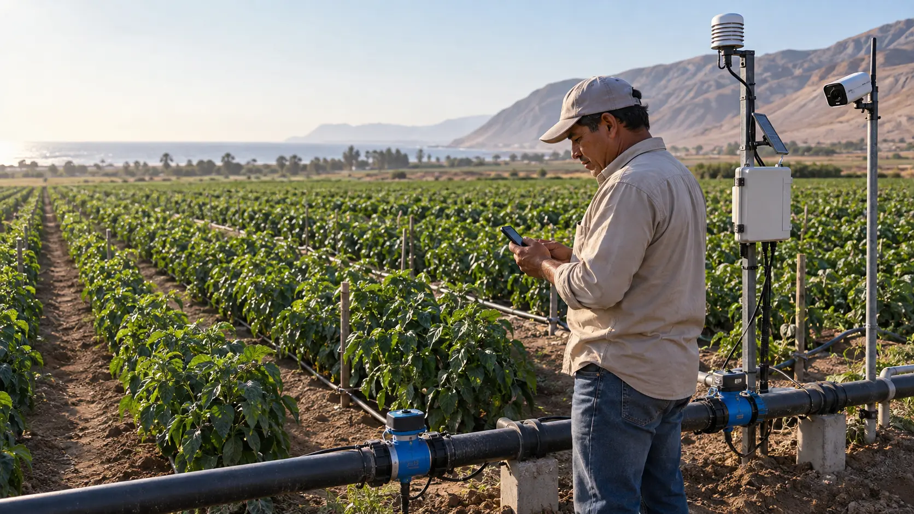

Protección agrícola inteligente
Detecta fugas y plagas. Actúa antes de que el problema crezca.
AgroLeak combina sensores de caudal, una electroválvula y visión artificial para proteger el riego y vigilar una plaga objetivo. El sistema valida cada evento en el propio campo y ejecuta una respuesta segura, configurable y trazable.
- Opera aun sin Internet
- Evidencia de cada evento
- Control humano y límites de seguridad

Monitoreo dual activo
Sector norte
Entrada28.4 L/min
Salida26.9 L/min
Posible fuga · Tramo 02
Electroválvula cerrada de forma preventiva
IA
Plaga objetivo detectadaConfirmación visual en curso
92%
El problema
El problema no espera a la próxima visita al campo.
Una fuga persistente desperdicia agua minuto a minuto. Una plaga puede expandirse mientras la revisión depende de recorridos manuales. AgroLeak convierte ambos riesgos en eventos visibles y accionables.
Fugas que se detectan tarde
Una diferencia de caudal puede continuar hasta la siguiente inspección del sistema.
Plagas detectadas demasiado tarde
Un insecto objetivo puede pasar desapercibido entre inspecciones y ampliar el área afectada.
Respuestas lentas o indiscriminadas
Sin evidencia ni ubicación, es más difícil intervenir solo donde el cultivo lo necesita.
Dos riesgos, una sola solución
Protección continua para el riego y el cultivo.
Dos circuitos de monitoreo independientes comparten un mismo Edge, panel e historial de evidencias.
Detiene una posible fuga antes de que siga creciendo
AgroLeak compara el caudal de entrada y salida, descarta variaciones breves y aísla el tramo cuando la anomalía persiste.
Reconoce una plaga objetivo con IA
La cámara observa un punto controlado; el modelo identifica el insecto definido y conserva la imagen que respalda la alerta.
Interviene solo donde hace falta
Tras confirmar la persistencia y las reglas de seguridad, activa una trampa, succión o microbomba localizada.
Mantiene el control en tus manos
Elige actuación automática, aprobación humana o solo alerta, con pausa manual y límites por evento y por día.
Explica cada decisión
Revisa lecturas, imagen, confianza, acción, resultado y hora en un historial listo para seguimiento.
Así de simple
Detecta, valida y responde.
La lógica local reduce el tiempo de respuesta y no depende de una conexión permanente.
-
1
Instalamos el kit
Configuramos dos sensores de caudal, una cámara y actuadores en el sector elegido.
-
2
Medimos y observamos
Los sensores comparan el flujo y la cámara vigila un punto controlado para la plaga objetivo.
-
3
El Edge valida
La persistencia, la confianza del modelo y los límites de seguridad filtran eventos aislados.
-
4
Actúa y deja evidencia
Cierra el tramo o ejecuta una respuesta localizada; después registra el resultado y te notifica.
Automatización responsable.
La detección no equivale a un diagnóstico. La actuación exige persistencia, umbral, interlocks y el modo de autorización definido por el usuario.
Diseñado para actuar con límites
Automatizar no significa perder el control.
Antes de mover una válvula o activar una respuesta localizada, AgroLeak revisa condiciones técnicas, autorización y frecuencia de uso.
Confirmación por persistencia
No actúa por una sola lectura o una imagen aislada.
Modo de autorización
Automático, con aprobación humana o únicamente alerta.
Límites y retroalimentación
Duración, cantidad diaria y verificación del actuador.
Parada y recuperación seguras
Pausa manual, caducidad de comandos y estado seguro ante fallos.
MVP académico seguro
La demostración utiliza trampa, succión o microbomba con líquido inocuo. No emplea pesticidas reales. Cualquier aplicación futura deberá usar un producto autorizado, seguir su etiqueta y cumplir la normativa aplicable.
El producto
Un kit modular para proteger el riego y vigilar la plaga que te importa.
Empieza monitoreando un tramo crítico y un sector del cultivo. Cuando compruebes el valor de la información, puedes incorporar nuevos tramos y puntos de observación sin reemplazar toda la solución.
Modelo propuesto
Kit e instalación + suscripción digital
La configuración final depende del campo, el tipo de riego y el número de tramos.
Kit AgroLeak
Monitoreo y control de 1 tramo
- 2 sensores de caudalEntrada y salida del tramo
- Unidad EdgeProcesamiento, reglas y control local
- Cámara con IADetección de una plaga objetivo
- ElectroválvulaCierre preventivo del sector afectado
- Actuador localizadoTrampa, succión o microbomba segura
- Acceso digitalRiego, imágenes, alertas e historial
- Configuración inicialUmbrales, capturas y modo de actuación
¿Es para ti?
AgroLeak está pensado para productores que quieren ver más sin recorrer todo el campo.
- Usas riego por tubería o un sistema donde se pueda medir entrada y salida.
- Dependes de inspecciones presenciales para conocer el estado del riego.
- Necesitas vigilar de forma continua una plaga objetivo.
- Buscas intervenir de manera localizada y con evidencia.
- Necesitas detener una posible pérdida de agua sin esperar a llegar al campo.
- Prefieres empezar con un piloto antes de ampliar la instalación.
Empieza sin complicarte
Prueba AgroLeak en un sector de tu campo.
Evaluamos tu sistema, elegimos un tramo de riego y un punto de observación para probar la detección de fugas, el reconocimiento de una plaga objetivo y las acciones seguras en condiciones controladas.
1 tramo · cámara con IA · electroválvula · actuador localizado
Quiero solicitar un piloto
El canal de contacto se habilitará al conectar el frontend con el backend.
Preguntas frecuentes
Antes de instalar AgroLeak.
¿AgroLeak confirma una fuga automáticamente?
No. Identifica una posible fuga mediante diferencias persistentes de caudal y puede aislar el tramo. La causa se confirma mediante inspección.
¿Qué hace la cámara con inteligencia artificial?
Observa un punto controlado e identifica una plaga objetivo definida para el piloto. Cuando supera el umbral y la persistencia configurados, conserva la evidencia y genera el evento.
¿La cámara activa insecticida automáticamente?
No en el MVP académico. La respuesta se demuestra con una trampa, succión o microbomba con líquido inocuo. Cualquier uso futuro de un producto fitosanitario requerirá autorización, etiqueta y controles adicionales.
¿Qué pasa si se pierde Internet?
La unidad Edge continúa aplicando reglas locales, conserva lecturas e imágenes y sincroniza la evidencia cuando vuelve la conectividad.
¿AgroLeak abre o cierra válvulas?
Sí. La propuesta incorpora una electroválvula para cerrar el tramo afectado automáticamente o después de una confirmación. La reapertura se realiza tras verificar el sector.
¿Puedo comenzar con una sola zona?
Sí. La propuesta es modular: puedes validar un tramo y luego incorporar otros sectores.
¿Cuánto cuesta?
La cotización depende del sistema de riego, el número de tramos y las condiciones de instalación.
¿Listo para validar AgroLeak en tu campo?
Revisar el piloto
En la siguiente fase conectaremos este punto de contacto con el backend comercial.